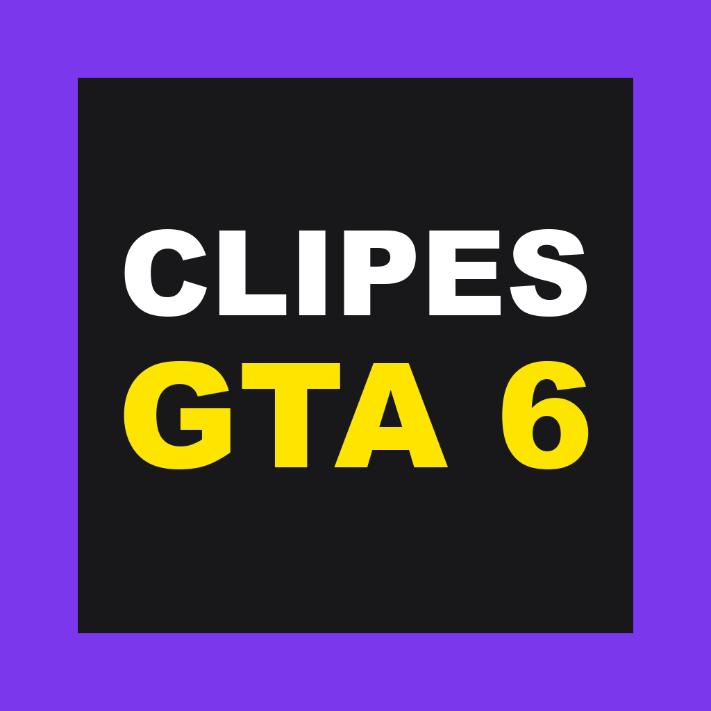

clipesgta6
A desktop tool that edits popular gaming clips into vertical videos and sends them to the creator's own TikTok drafts.
How it works
- The tool runs on the creator's own computer (Windows command line).
- It finds popular public Twitch clips through the official Twitch API and edits them into 9:16 vertical videos with subtitles and an on-screen credit to the original streamer.
- The creator connects their TikTok account with Login Kit.
- Selected videos are uploaded with the Content Posting API (
video.upload) as drafts. Nothing is published automatically: the creator opens the TikTok inbox notification, reviews, edits and posts manually.